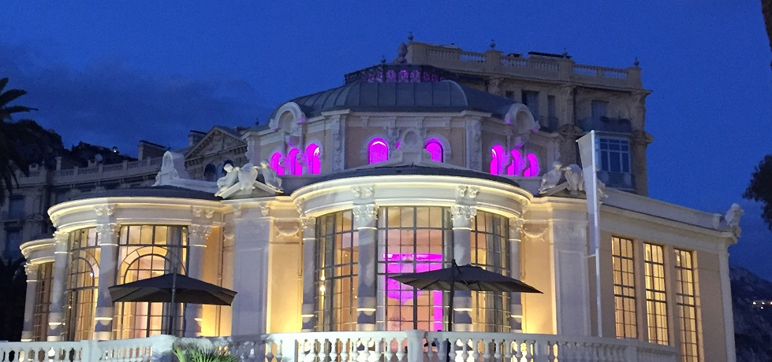

Запись блога by Max Kalashnyk
Posted on August 24, 2016 at 8:00 PM

Болье-сюр-Мер – славный город, который находится в самой красивой горной местности всего Лазурного побережья Франции.
Только здесь горы расположены так близко к морю, как нигде в другом месте. Болье-сюр-Мер находится между мысами Кап Ферра и Кап Ру. Так как горы оберегают этот город от ветров, здесь очень благоприятный и теплый климат. Благодаря этому, Болье-сюр-Мер всегда славился своим богатым урожаем цитрусовых, и даже один из районов города имеет название «Маленькая Африка».
Этот славный город был основан в 1861 году, а его расцветание припало на время Бель Эпок. В этот период времени на территории Болье-сюр-Мер проживали многие известные личности, такие как Густав Эйфель, Джеймс Гордон Беннет, Исаак Зингер, императрица Евгения, принц де Галль и многие другие коронованные особы, ученые, артисты и музыканты. Правда, во время Первой Мировой войны все знаменитости выехали из этого курортного города, но популярности он не потерял и в наши дни. Все, кто желают получить прекрасный летний загар, отдохнуть от скучной рутины и просто попутешествовать, добро пожаловать в Болье. В Болье-сюр-Мер расположены два хороших песчаных пляжа и два порта для яхт.
Чем может удивить Болье-сюр-МерОдним из самых ярких и известных исторический сооружений этого города считается «Ротонда». В наше время в «Ротонде» проходят различные конференции, концерты и конгрессы, а раньше это здание служило как знаменитый гранд-отель, в котором останавливались все «сливки общества», приехавшие на отдых в Болье-сюр-Мер. Кроме того, именно в этом городке находится вилла Керилос. Эта вилла считается одной из лучших древнегреческих вилл во всем мире. Стоит также отметить Исторический музей в Болье-сюр-Мер, который создал местный историк Андре Кан. В музеи представлены археологические экспонаты первобытной жизни французской Ривьеры, коллекция ремесленных изделий девятнадцатого века, коллекции картин и фотографии таких художников этого города, как Комба и Мосса. Известен этот город и Гран-Казино, в котором ежегодно проводят турниры по покеру. Как же добраться в славный город Болье-сюр-Мер? Приехать сюда вы сможете на поезде из Ниццы и Ментона, а также добраться на автобусе или машине автострадой Ницца-Монако, которая тянется вдоль моря. Боле-сюр-Мер – это лучший беззаботный отдых, прекрасное море, роскошные отели и элитные виллы. Здесь расположены богатые тропические сады, в которых растут редкие виды пальм, а также многолетние оливковые деревья.